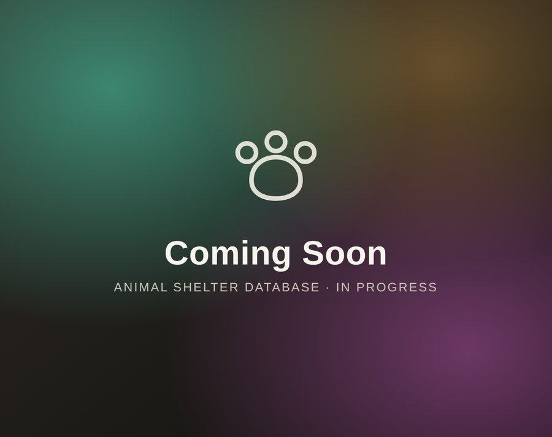
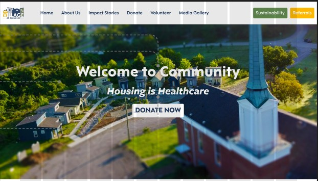
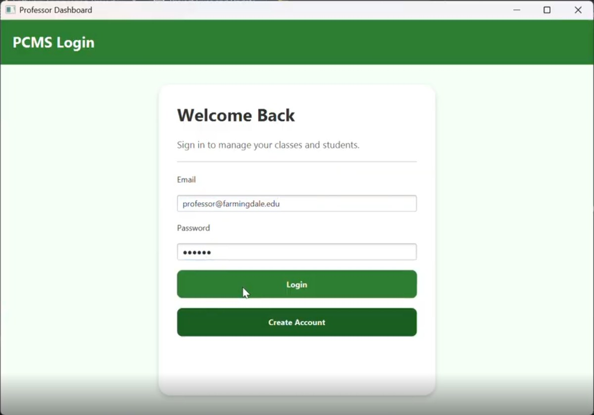

I'm a computer science undergraduate student, aiming to transform how we use tech altruistically.
Selected Projects

01Rethinking how a local animal shelter functions on all levels, from adopting an animal to operational management.
View project →
02Worked with Develop For Good so that the Nashville community can easily access, understand, and engage with The Village At Glencliff's medical respite mission.
View project →
03An open-source JavaFX desktop app (PCMS) so professors can manage courses, rosters, and grades from one place — built with a four-person software engineering team.
View project →